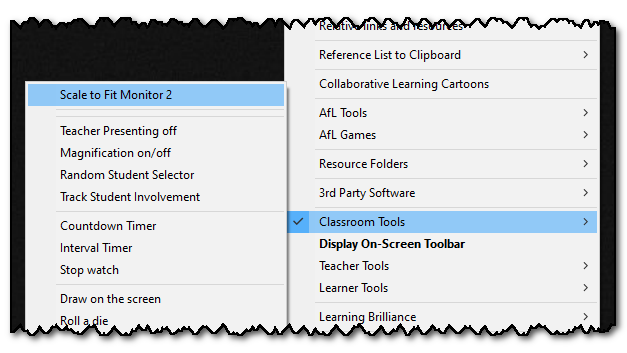
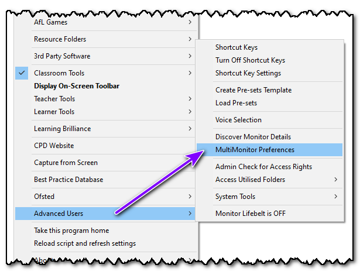
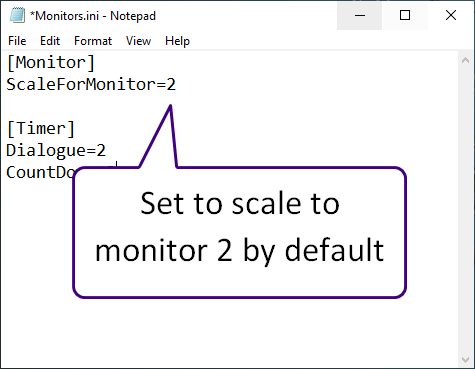

Scale to Fit
If you are using two monitors/screens, and they have different resolutions, you can select to use the resolution of the secondary monitor instead of the primary (default) monitor.

Re-selecting this option will then return to the primary monitor settings.
Top tip:
If you use the same classroom, you can set the Teacher Toolkit to automatically scale to monitor 2 (your interactive board) by default.
To do this, access the Advanced Users menu and select MultiMonitor Preferences:

This will create a file in your user account, where you can select the default monitor:

You can alter this, or delete the file to return it to the original settings.